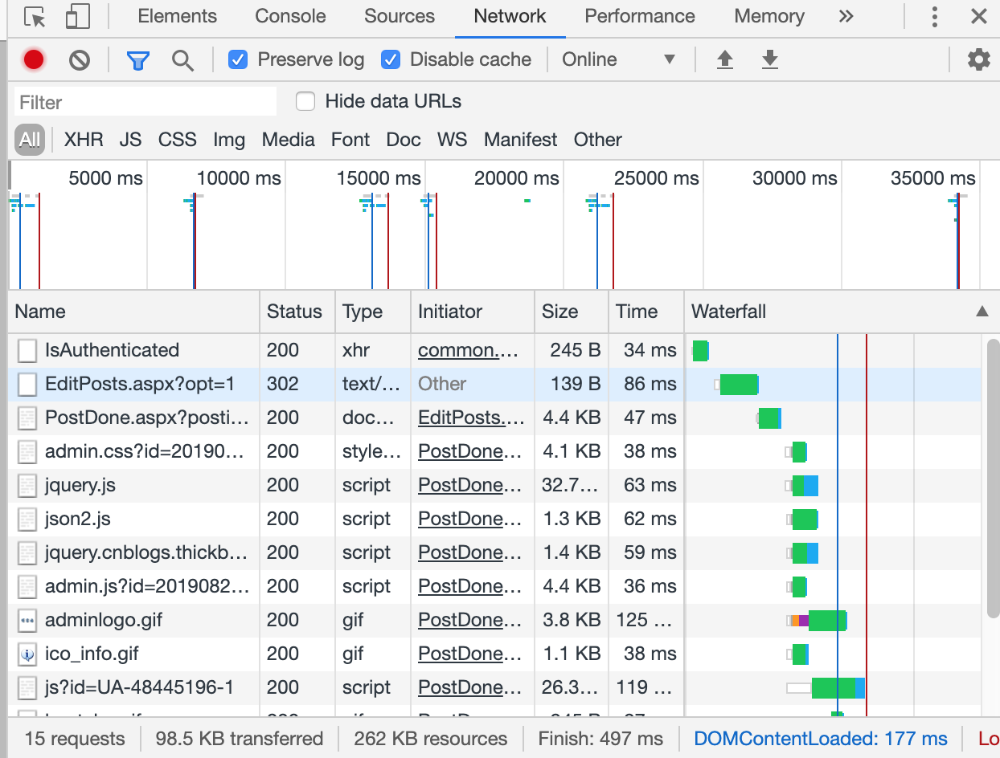
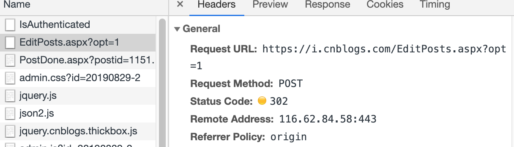
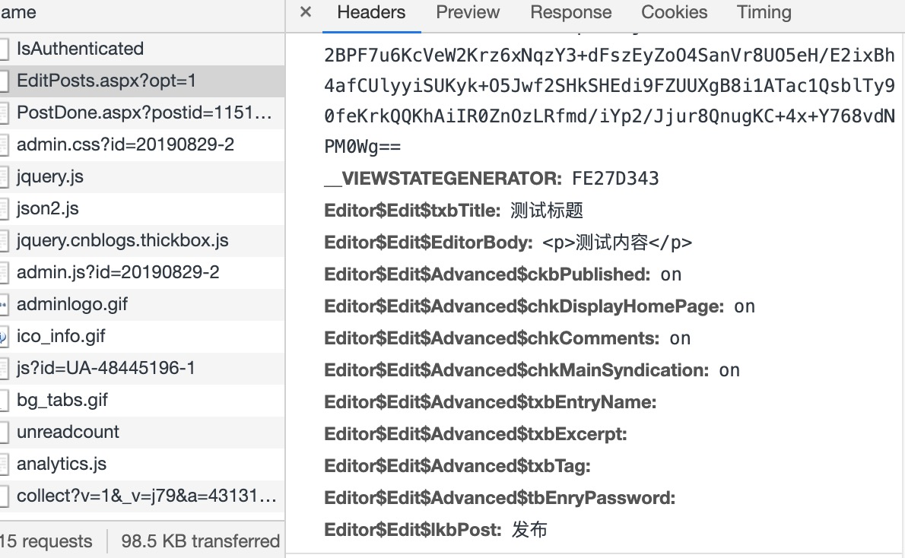
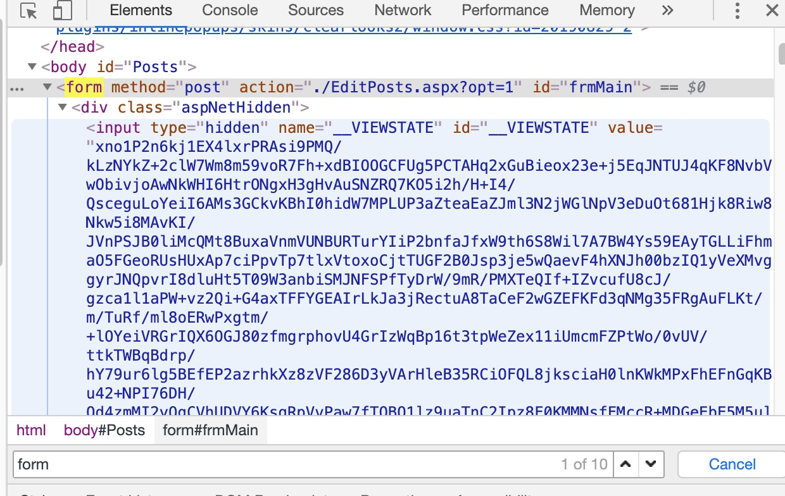
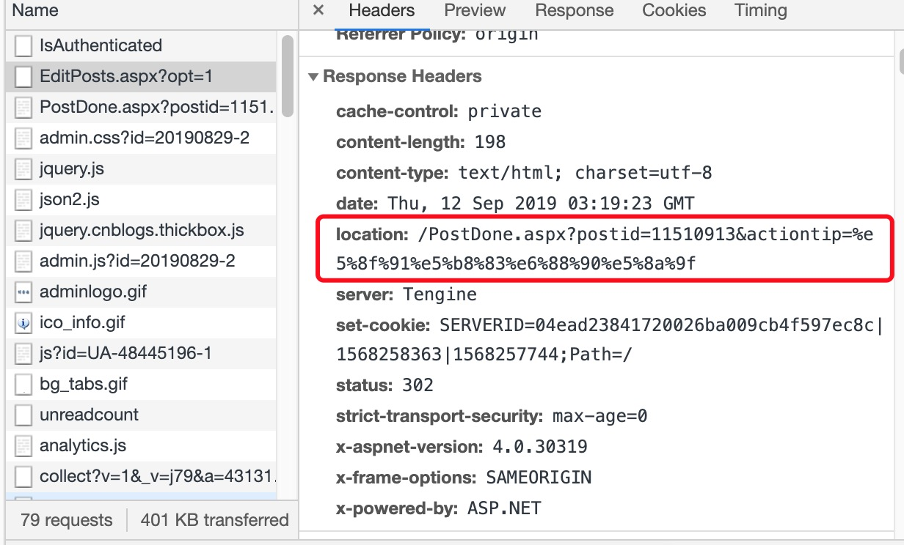
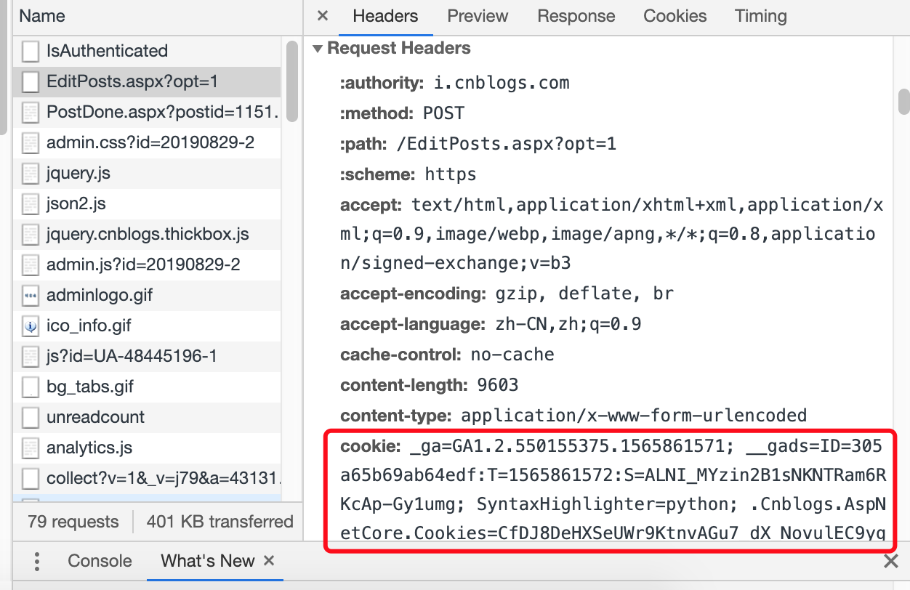

最近在开发一个博客系统，经常把写的东西放在自己网站的博客上（之前写在Onenote），然后我在博客园也申请了一个博客，就有了同样一篇文章，我需要复制粘贴排版分别提交两次的情况。于是我就想能不能在我的网站内提交后直接把这篇文章同步提交至博客园甚至是其他第三方博客呢，所以花点时间实现了这个功能。本文写的比较细，面向对这一块了解不多的同学，大神就一笑置之吧。
所有浏览器行为，本质都是向web服务器发起http请求，服务器收到请求后，根据请求内容返回结果，浏览器经过渲染后最终呈现给用户。
登录博客园，进入后台，新建一篇随笔，可以看到，编辑页面的url为https://i.cnblogs.com/EditPosts.aspx?opt=1，把标题和内容随便写一写，F12打开Chrome控制台，由于文章发布后博客园会有重定向，所以把Preserver log勾选上，这样刷新网页历史记录也不会消失。
点击发布按钮，出来一大堆东西

第一个结果看名字推测是验证用户是否登录，我们直接点第二个结果：

发现这就是一个常规的POST请求，显然这大概率是我们要找的目标，继续看看它提交了什么数据

除了图片上的字段，还有一段很长的字段，字段名为__VIEWSTATE
可以看到，除了__VIEWSTATE和__VIEWSTATEGENERATOR我们完全不知道是什么之外，下面几个字段看名字就可以推测作用
我们先不管具体的作用，注意到POST请求的url和我们编辑文章的url是同一个地址，推测这里直接使用form表单提交的可能性较大，回到页面看看http结构

在页面中确实找到了form表单，并且下面恰好就有一个隐藏input，就是我们刚才看到的__VIEWSTATE。
确定了是form表单后，事情就变得简单了，找到并确认提交的字段作用如下：
__VIEWSTATE：博客园生成字段
__VIEWSTATEGENERATOR：博客园生成字段
Editor$Edit$txbTitle：文章标题
Editor$Edit$EditorBody：文章内容
Editor$Edit$Advanced$txbTag：文章标签
Editor$Edit$Advanced$txbExcerpt：文章摘要
Editor$Edit$Advanced$ckbPublished：on 文章是否发布
Editor$Edit$Advanced$chkDisplayHomePage：on 显示在我的博客首页
Editor$Edit$Advanced$chkComments：on 允许评论
Editor$Edit$Advanced$chkMainSyndication：on 显示在RSS中
Editor$Edit$Advanced$chkPinned：on 置顶
Editor$Edit$Advanced$txbEntryName：友好地址名
Editor$Edit$Advanced$rblPostType：文章类型 （1-随笔 2-文章 3-新闻 4-日记）
Editor$Edit$Advanced$tbEnryPassword：阅读密码
Editor$Edit$lkbPost：发布
这些就是主要字段，值得注意的是Editor$Edit$lkbPost的值，可以是“发布”，也可以是“存为草稿”，功能就不言自明了
分析完提交文章的请求过程，再来看看博客园的响应内容：

响应状态码为302，代表页面重定向，重定向到localtion的地址，这里地址有个值得注意点，就是postid=11510913，不出所料是新文章的id，后续可能会有用。
好了，说了这么一圈，其实整个http请求异常简单：
用户使用POST方式向https://i.cnblogs.com/EditPosts.aspx?opt=1提交数据，如果成功会返回一个重定向的地址，这个地址包含了一个新文章的id。下面开始用代码来实现吧。
虽然在分析HTTP请求的过程中一直没有谈到登录，但博客园肯定是要在登录状态下才能发文的，通常可以采用两种方式来实现模拟用户登录行为。
何为Cookie？可以举一个并不十分恰当的例子。我们去高铁站坐高铁，要经过取票、刷票进站这么一个流程，闸机会通过验证高铁票的真伪、出行时间、人脸认证来判断是否放行。在这个例子中，高铁票就是Cookie，web服务器首先在我们登录时给了我们一个Cookie（取票），然后我们下次访问页面时就会带着这个Cookie一起提交请求（验票），服务器一看，哦这家伙带着我给它发的通行证，再一瞧通行证是不是假的，有没有过期，验证后都没问题就可以知道是哪一个用户在访问它，进而给用户提供相应的服务。
了解Cookie之后，我们就知道这是服务器发的身份证，我们只要在访问页面时候把Cookie一起带上，服务器就会认为你已经登录了。那么如何拿到Cookie呢，其实Cookie就在HTTP的请求头里面：

很长的一段，没关系全部复制出来肯定不会错。
下面开始我们的第一段代码
import requests
def get_login_session(cookie):
headers = {
'referer': 'https://i.cnblogs.com/',
'cookie': cookie
}
session = requests.session()
session.headers.update(headers)
return session
get_login_session方法接收一个cookie，返回一个session，其实session就是requests的另一层封装，它会自动把你处理像Cookie呀一类的请求。我们在这个方法内给session传递了两个请求头，一个是cookie，另一个是referer，cookie就不用多说了，referer是由于不少网站会用这个字段来判断你是不是机器人，出于经验主义我把它加上来了，但是如果不加是否有效，你们可以自行验证一下。
如果对session甚至是requests还有疑问的同学，可以查阅官方文档http://2.python-requests.org/zh_CN/latest/user/advanced.html#advanced
使用Cookie模拟登录，在代码层面来看确实十分简单，但是对于普通用户来说，他未必能够理解Cookie并找到它，更多人能记住的仅仅是自己的账号密码，所以理应要有账号密码登录的功能。如果你理解了本文的第一部分，就会发现登录本质上还是一个POST请求，而且更简单、提交的字段更少。需要特别说明的一点是，博客园有一个验证机制，登录的时候大概率会弹出一个滑块验证码，只有验证通过后才会让你登录。针对这个问题，以我的认知，requests目前是没有办法解决的，但真的要做，也不是全无办法，我们可以采用selenium来实现模拟登录，过滑动验证码的方案百度上也有很多（本想贴我以前看过的一篇文章，无奈没找到~），模拟拿到Cookie后即可，这里我就不详讲了，如果大家确实感兴趣，后续我在专门写一篇过博客园验证码的文章。
现在我们拿到登录后的session，要做的只是提交一篇新文章的POST请求，先上代码
from bs4 import BeautifulSoup
def post_article(session,title,summary,content,**kwargs):
'''
向博客园提交新文章
:param session:登录的session
:param title: 文章标题
:param summary: 文章摘要
:param content: 文章内容
:param kwargs: 自定义form表单内容
:return: Response
'''
url = 'https://i.cnblogs.com/EditPosts.aspx?opt=1'
wb_data = session.get(url,allow_redirects=False)
soup = BeautifulSoup(wb_data.txt,'lxml')
__VIEWSTATE = soup.find(id='__VIEWSTATE')['value']
__VIEWSTATEGENERATOR = soup.find(id='__VIEWSTATEGENERATOR')['value']
data = {'Editor$Edit$lkbPost': '',
'Editor$Edit$Advanced$ckbPublished': 'on',
'Editor$Edit$Advanced$chkDisplayHomePage': 'on',
'Editor$Edit$Advanced$chkComments': 'on',
'Editor$Edit$Advanced$chkMainSyndication': 'on',
'Editor$Edit$Advanced$txbEntryName': '',
'Editor$Edit$Advanced$txbExcerpt': summary,
'Editor$Edit$Advanced$txbTag': '',
'Editor$Edit$Advanced$tbEnryPassword': '',
'__VIEWSTATE': __VIEWSTATE,
'__VIEWSTATEGENERATOR': __VIEWSTATEGENERATOR,
'Editor$Edit$txbTitle': title,
'Editor$Edit$EditorBody': content}
data.update(kwargs)
response = session.post(url,data=data,allow_redirects=False)
return response
代码内的注释应该很明白了，额外说几点。第一点是由于__VIEWSTATE和__VIEWSSTATEGENERATOR字段是博客园生成的，所以我首先是用get请求，使用BeautifulSoup解析返回页面并找到__VIEWSTATE和__VIEWSSTATEGENERATOR，然后再构建data进行post提交。第二个点是由于先前我们已经注意到，返回的是一个302重定向页面，而requests是默认自动帮我们做重定向的，由于我们在后续的步骤中需要最原始的响应来帮助我们作判断，所以我们使用allow_redirects=False禁用了重定向。最后一点是post_article方法还支持以键值对的方式传递任意参数，这些参数最终会更新到data并提交至博客园，所以我们可以在调用方法时控制提交文章的一些选项，比如post_article(session,title,summary,content,Editor$Edit$Advanced$txbTag="Python")。
实际上，一般情况下调用post_article方法的后你的文章已经发布出去了，如果你想判断是否真的成功了，那么我们可以继续。
在第一部分我们知道了如果发布文章成功，那么服务器首先返回的是一个状态码为302的重定向页面，如果发布失败了，比如当我发表标题重复的文章又或者触碰了其他博客园规则，这时候服务器返回的就是一个状态码为200的普通页面。所以我们可以根据返回对象的status或者Localtion来做一层判断
location = response.headers.get('Location')
if location:
return True值得一提的是，博客园文章的内容是基于html语言的，如果直接把普通文本提交到博客园，那么文章的排版肯定会十分混乱，所以对文章内容需要进行特别处理，由于我在写的博客系统，存储的文章内容本身就是基于html语言的，所以我这也就没有处理需求，在本文就不展开讲了。
新建文章也不仅仅只有我列出的那一部分字段，如果我没有列出来的，可以在form表单下的input标签。
#!/usr/bin/env python
# -*- coding:utf-8 -*-
from bs4 import BeautifulSoup
import requests
def get_login_session(cookie):
headers = {
'referer': 'https://i.cnblogs.com/',
'cookie': cookie
}
session = requests.session()
session.headers.update(headers)
return session
def post_article(session,title,summary,content,**kwargs):
'''
向博客园提交新文章
:param session:登录的session
:param title: 文章标题
:param summary: 文章摘要
:param content: 文章内容
:param kwargs: 自定义form表单内容
:return: Response
'''
url = 'https://i.cnblogs.com/EditPosts.aspx?opt=1'
wb_data = session.get(url,allow_redirects=False)
soup = BeautifulSoup(wb_data.text,'lxml')
__VIEWSTATE = soup.find(id='__VIEWSTATE')['value']
__VIEWSTATEGENERATOR = soup.find(id='__VIEWSTATEGENERATOR')['value']
data = {'Editor$Edit$lkbPost': '',
'Editor$Edit$Advanced$ckbPublished': 'on',
'Editor$Edit$Advanced$chkDisplayHomePage': 'on',
'Editor$Edit$Advanced$chkComments': 'on',
'Editor$Edit$Advanced$chkMainSyndication': 'on',
'Editor$Edit$Advanced$txbEntryName': '',
'Editor$Edit$Advanced$txbExcerpt': summary,
'Editor$Edit$Advanced$txbTag': '',
'Editor$Edit$Advanced$tbEnryPassword': '',
'__VIEWSTATE': __VIEWSTATE,
'__VIEWSTATEGENERATOR': __VIEWSTATEGENERATOR,
'Editor$Edit$txbTitle': title,
'Editor$Edit$EditorBody': content}
data.update(kwargs)
response = session.post(url,data=data,allow_redirects=False)
return response
if __name__ == "__main__":
cookie = input('请输入博客园Cookie: ')
session = get_login_session(cookie)
response = post_article(session,'测试标题','测试摘要','测试内容')
location = r.headers.get('Location')
if location:
print('文章发布成功')
else:
soup = BeautifulSoup(r.text, 'lxml')
ErrorPanel = soup.find('div', {'class': 'ErrorPanel'})
if ErrorPanel:
print(ErrorPanel.get_text())
print('文章发布失败')